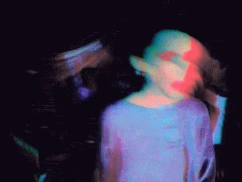
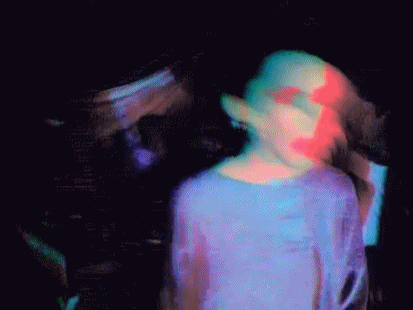

where is home?

after love

an empty, baroque style hallway decorated with the best timber of the kingdom. the faint candle on her
hand illuminated nothing but a few inches of space between her thoughtless eyes and
thousands of portraits on the wall.
she recognized their eyes. they are hers. but who are they?
so familiar, yet she could not recall a single interaction. it's as if she's looking at a thousand static
mirrors. snapshots of a timeline.
are they her? whispers told her they are.
how strange.
(this webpage is interactive!)
where is home?
after love
Informal Observation Report #2*7
Patient: Unknown | Date: -03:46, 2202/80/50 | Narcotics: error_reporting_404